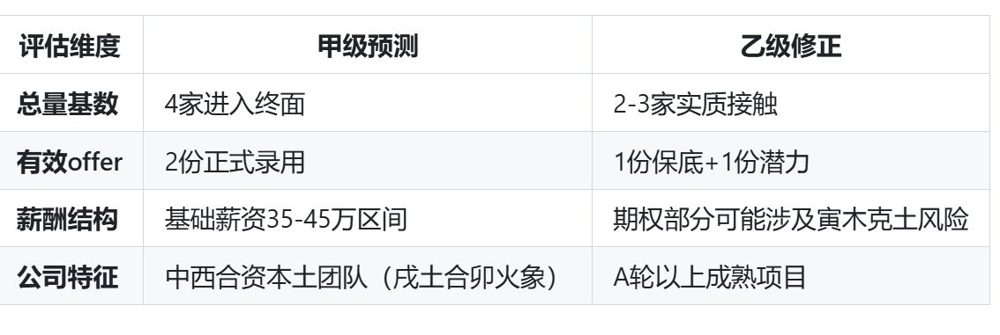

Tags: 导入Edge::3-22
人代表妻子，
财代表稳定的工资或者收入。
稳定收入、可积累的资源（如工资、专利、客户池）。
Tags: 导入Edge::3-22
才能，创造力、语言表达、跨界能力（亥中壬甲，暗含互联网/跨国属性）。
Tags: 导入Edge::3-22
乙木坐亥水 为什么被认为是无根之木？
【乙木性质是什么样子的？它的类比是什么？以及亥水中有哪两个？会导致乙木难以怎么样？】
乙木性质柔弱，如花草藤蔓，需要稳定的滋养和依靠。亥水中虽有壬水和甲木，但壬水过于浩大，如波涛汹涌，使得柔弱的乙木难以承受这种强大的滋养。
Tags: 导入Edge::3-22
壬水和亥水虽然都属水，两者的区别是什么？
【分别是什么属性的水，以及分别代表什么？】
壬水，阳水代表大江大河，
亥水，阴水代表小溪湖泊。
壬水为天干阳水，代表江河湖海等大水，性质猛烈，流动性强。
亥水为地支阴水，是水的归聚之地，如五湖汇聚。
Tags: 导入Edge::3-22
乙亥大运期间。 乙木（伴侣）会被水流（亥水）冲走。这种情况的解法是什么？ 【加固锚点，这里的锚点指的是什么？】【比如购置什么？建立什么绑定？】
需要你 主动加固“锚点”（如购置共有房产、建立利益绑定）。
Tags: 导入Edge::3-22
乙巳2025年关键动作：
若想挽回现女友：在阴历哪个月份见面？这个月份的五行是什么？做什么来压制变动?
农历4月份，巳火，阳历5月份，使用规则/书面承诺来压制变动。
- 在 巳月（农历4月） 见面，用巳火（证件/迁徙）冲亥水（异国阻隔）。
- 签订法律文件，书面的形式（如婚前协议，结婚登记），用“火”的规则性压制“水”的变动性。
Tags: 导入Edge::3-22
乙亥大运（2026-2035）感情经营法则 是什么？【哪两方面措施?资产和娱乐】
- 建立共同的账户，每个月定期存款，用于房地产首付。
- 定期双人旅行（尤其是南方火地），用空间能量平衡命局。
Tags: 导入Edge::3-22
真正的“高速发展”不是单项冲刺，而是 什么的艺术？
多维平衡的艺术。
Tags: 导入Edge::3-22
正财 和 偏财这两者的类比是什么？
正财比作每月固定的薪水，偏财（类似投资或意外之财）。
Tags: 导入Edge::3-22
正财格的特征，如身强才能担财，身弱侧可能财多压身。使用类比的方法来类比一下。
用举重来类比，身强的人能举起更重的财，身弱的人即使有很多财也承受不住，反而可能受伤。
Tags: 导入Edge::3-22
正财格的婚姻，男命和女命分别什么特点？
男命得贤妻，女命婚运佳。
Tags: 导入Edge::3-22
命盘中夫妻宫子水与月支卯木相刑（子卯刑），主感情中多什么？
主感情中多矛盾与磨合。
Tags: 导入Edge::3-22
子水为伤官，代表什么？【容易因什么问题产生摩擦？】
情绪波动和敏感，容易因沟通问题产生摩擦。
Tags: 导入Edge::3-22
八字中的"十神"，代表父母辈的两个是什么？
Tags: 导入Edge::3-22
八字中的"十神"，代表社会管理者 的两个是什么？
Tags: 导入Edge::3-22
八字中的"十神"，伤官 命名逻辑是什么？ 以及类比是什么？
伤，就是破坏。 官，就是传统的权威的规则。 类比：叛逆期儿子，带着电吉他炸街。
Tags: 导入Edge::3-22
八字中的"十神"，正官 命名逻辑是什么？ 以及类比是什么？
正规的管理者（如公务员按规章审批文件），类比：教导主任，按校规办事。
Tags: 导入Edge::3-22
八字中的"十神"，七杀 命名逻辑是什么？ 以及类比是什么？
第七位天干的杀气，（如军训教官让学员2分钟吃完午餐），类比：特警教官，高压训练。
Tags: 导入Edge::3-22
八字中的"十神"，比肩 命名逻辑是什么？ 以及类比是什么？
并肩而行的同类（如创业合伙人平分股权），类比：双胞胎兄弟，共享资源。
Tags: 导入Edge::3-22
2019己亥年（亥水引发合局），你们在英国同居的本质是 是什么？
【借什么之力？暂时稳固了什么星？形成了什么宫？】
借亥水之力暂时稳固乙木妻星，形成“临时夫妻宫”。
Tags: 导入Edge::3-22
命理中 “亲密度≠夫妻缘” 。
Tags: 导入Edge::3-22
这段五年感情如同 什么——在特定时空下绚烂，但无法移植到北京干燥的土壤中。
英伦雨季的蔷薇。
Tags: 导入Edge::3-22
时空局，
本体局。
Tags: 导入Edge::3-22
时空局，
本体局，
两者给人的感觉分别是什么？
“时空局”的短暂美好与“本体局”的长期契合。
Tags: 导入Edge::3-22
真正的正缘，不需要靠什么来维系。
地理或回忆的温室。
Tags: 导入Edge::3-22
时空局主要由两个部分组成，其中，大运部分指的是什么？
环境
代表人生必须经历的自然环境流变，
是一个人所必须经历的环境变化。
Tags: 导入Edge::3-22
时空局主要由两个部分组成，其中，流年部分指的是什么？
【代表更大范围的什么？】
Tags: 导入Edge::3-22
车的质量，性能，
整体道路性质，【水泥路还是柏油路还是泥泞小路】
具体路段的实际状况。【道路的具体路况。是否有减速带？是否有沙子？是否平坦？】
Tags: 导入Edge::3-22
庚为十天干第七位，五行属阳金。
Tags: 导入Edge::3-22
彻底转向（亥中甲木偏财为其他选择）。
Tags: 导入Edge::3-22
你的八字如同 待锤炼的金矿（庚金），当前危机是必经的 火炼过程（丙火七杀）。
Tags: 导入Edge::3-22
若最终无缘，什么时候，会有更合适之人出现？以及为什么？
2026年乙亥运中 正财透干，（妻星得亥水生，心智成熟的伴侣）。
Tags: 导入Edge::3-22
此刻的磨难，正是为了让你分清 什么（亥水偏财）和什么 （卯木正财）的区别。
执念（亥水偏财）与 正缘（卯木正财）。
Tags: 导入Edge::3-22
现实操作策略来挽回感情 【制定什么的解决方案和展示可以怎么样的蓝图？】
- 立即行动（火）：制定3个月内的 异国解决方案，
- 重铸根基（土）：向女方展示 可落地的未来蓝图。
Tags: 导入Edge::3-22
当前的丙子大运（2016-2025）中，丙火什么透出？
丙火七杀。
Tags: 导入Edge::3-22
辰土对应的本质定义是什么？
【存储什么的存储器？】
辰土作为水元素的能量存储器（非单纯地理水库）。
Tags: 导入Edge::3-22
正财透出是否意味着赚大钱？
需要综合哪三个维度判断？
不是的，需综合日主强弱、护卫机制、流通情势等多维度判断。
Tags: 导入Edge::3-22
地支亥水为食神，生财， 通过什么方式来赚钱?
通过技术来赚钱。
可能代表通过才华或技能赚钱，但也可能水旺导致情绪波动。
Tags: 导入Edge::3-22
我的八字里面，正财，食神，日主 以及 印星 分别对应什么五行？
正财，乙木，
食神，亥水，
日主，庚金，
印星，己土。
Tags: 导入Edge::3-22
对于感情的不稳定，用“火”调和（丙火七杀代表规则）：具体措施是什么？ 【什么样的承诺和什么文件？例如什么计划？】
制定家庭共同目标（如购房计划）书面承诺或者法律文件。
Tags: 导入Edge::3-22
2026丙午年（火旺）：
事业上会发生什么？
是因为丙火和午火分别怎么样？
丙火炼金，午火生土，事业突破年（如升职）。
Tags: 导入Edge::3-22
乙亥大运的行动地图 ，感情和健康 分别需要怎么办？【感情上避免什么化表达？健康上注意哪个部位？】
在感情上要用规则和理性去控制情绪，避免情绪化的表达，而且双方设立共同的目标而去努力。
健康上需要注意调理脾胃。
Tags: 导入Edge::3-22
我的八字中的正财是什么五行？
乙木。
Tags: 导入Edge::3-22
当前大运丙火七杀，流年乙木生丙火，杀更旺，压力大，需要印来化解，所以可能建议怎么样？
加强自身能力（印代表学习），同时寻找机会。
Tags: 导入Edge::3-22
正财格的人通常性格比较怎么样？重视什么？
正财格的人通常比较务实，重视稳定和实际收益。
Tags: 导入Edge::3-22
2025 为什么杀星能量已达顶峰？
丙子大运最后一年（2025）杀星能量已达顶峰。
Tags: 导入Edge::3-22
简历中应该突出什么经验？然后面试的时候应该展示什么能力？
- 简历可突出海外项目经验（子为驿马星）
- 面试宜展现学习能力（子水主流动智慧）
Tags: 导入Edge::3-22
农历什么时候会有意外机遇出现，需保持随时能进入面试的状态。以及为什么？
二月。一方面是因为金三银四求职季节，万象城农历就是2月，3月，另一方面我是农历2月出生。
Tags: 导入Edge::3-22
每天什么时候背诵核心知识点？【几点到几点以及对应的地支是什么？】
每日辰时（7-9点）辰土。
Tags: 导入Edge::3-22
2025年是哪个大运最后一年，压力怎么样？
丙子大运，压力较大。
Tags: 导入Edge::3-22
事业压力较大，需靠哪两个方面来化解？【技能和贵人，分别代表什么？】
技能（伤官）或贵人（印）化解。
Tags: 导入Edge::3-22
补土的食物和补金的食物分别有哪些？按照强度从高到低排序。
山药，小米，黄豆，南瓜，大枣。
白萝卜，梨，银耳，鸡肉，杏仁。
Tags: 导入Edge::3-22
避免穿什么色衣物。
避免穿青色衣物。
Tags: 导入Edge::3-22
从命理看，正财代表妻子，偏财代表什么？
情人或短暂关系。
Tags: 导入Edge::3-22
日支子水为伤官，代表您在感情中敏感细腻，但易什么和什么化？
易挑剔、理想化。
Tags: 导入Edge::3-22
正缘是什么样的对象？【性情怎么样、什么力强】
性情温和、包容力强的对象。
Tags: 导入Edge::3-22
庚金为什么之金，需经什么方成器。
此番情劫实为磨砺什么之机。
庚金为刀剑之金，需经火炼方成器。此番情劫实为磨砺心性之机。
Tags: 导入Edge::3-22
谁是庚金的财星，财旺可能会耗什么？
木是庚金的财星，财旺可能会耗日主。
Tags: 导入Edge::3-22
日主庚金偏弱，喜什么？忌什么？
喜土金来生扶，忌水木火。
Tags: 导入Edge::3-22
我的伤官在夫妻宫，意味着什么？
可能对配偶要求高，或感情中需要沟通。
Tags: 导入Edge::3-22
我的忌神是哪三个五行以及为什么？
忌神：木（耗金）、水（泄金）、火（克金）
Tags: 导入Edge::3-22
2025年流年：乙巳（正财透干+驿马冲年支）在婚姻关系里面，如何去理解？
乙木正财（妻星）透出：正财代表妻子，透干预示婚姻机缘成熟。
巳亥冲（驿马冲动年支）：主远距离变动，可能结束异国状态（如一方回国）。
Tags: 导入Edge::3-22
本主感情细腻但易生什么？
挑剔。
Tags: 导入Edge::3-22
哪一年有较大概率结婚？
2025.
Tags: 导入Edge::3-22
正缘的外貌特点？【身材，身高，皮肤，表情，额头，眉毛，鼻梁，分别怎么样？】
可能身材苗条，身高中等偏修长（木主条达），
皮肤白皙通透（水主润泽），常带笑意，
额头饱满，眉形如柳叶，鼻梁直而不过高。
Tags: 导入Edge::3-22
正缘的性格特点？
比较节俭，注重实际，
有良好的人际关系，社交能力不错，
性情温和包容，善解人意，
注重生活细节（如会默默记住您的饮食偏好），外显低调不张扬，
感情观传统务实，追求稳定关系，不喜冒险恋情，对婚姻忠诚度高。
初期交往会谨慎观察，一旦认定后依赖性强，
擅长营造生活情趣，如布置家居、策划旅行，但消费观念理性（忌挥霍）
Tags: 导入Edge::3-22
正缘来自哪里？【地域的特点。】
来自北方或近水之地（如沿海、江河流域）。
Tags: 导入Edge::3-22
正缘的家庭背景是什么？【父母中一方是什么】
家庭背景普通但家教严谨，父母中有一方为公职或教师。
Tags: 导入Edge::3-22
阴土生什么？
阳金。
Tags: 导入Edge::3-22
正印核心代表保护，还代表什么？
母亲、学业、保护。
Tags: 导入Edge::3-22
丙戌 符合五行的形象化的比喻是什么？
熔岩在火山口翻滚。
丙戌：熔炉（丙火）在火山口（戌土），熔炼金属（庚金），七杀的压力转化为锻炼。
Tags: 导入Edge::3-22
个人八字里面，
河岸边的垂柳（什么），枝条轻拂水面（什么）
乙木，亥水。
Tags: 导入Edge::3-22
在十神中，伤官和食神的定义是什么？
伤官是日主所生的异性，食神是同性。
Tags: 导入Edge::3-22
庚 是阳金，生什么为食神。
生阳水（壬）则为食神，壬水（阳水，天干为壬，地支对应亥）。
Tags: 导入Edge::3-22
预测，在求职过程中，团队的背景或者是融资情况。 【甲级预测 以及乙级修正】
Tags: 导入Edge::3-22
预测，在求职过程中 ，终面总数，有效offer，薪酬结构，公司特征。

Tags: 导入Edge::3-22
AI 和 算法开发分别属什么？
科技it这方面都是属于火，而算法需要严密的严谨的思维逻辑，所以属于金。
AI属火（科技能量），算法开发属金（逻辑思维）。
Tags: 导入Edge::3-22
平时穿着的颜色，哪2种？
土：咖啡色，黄色，
金：白色，银色。
Tags: 导入Edge::3-22
乙亥运中金旺年份，例如2026年。
Tags: 导入Edge::3-22
时柱丙戌杀印组合，这里的印，体现了特别适合需要什么的技术管理岗位。
需要资质认证。
Tags: 导入Edge::3-22
选择技术研发类岗位 还是纯管理方向，以及分别这两个岗位的五行属性是什么？
选择技术研发类岗位（金），而非纯管理方向（火）。
Tags: 导入Edge::3-22
侧重算法优化、数据处理（木生火→火生土→土生金），形成五行流通。
Tags: 导入Edge::3-22
农历八月（酉月）。
Tags: 导入Edge::3-22
子水伤官，说明什么？【说明哪方面的能力强？】
子水代表思维，逻辑和语言。伤官代表不服从权威，叛逆以及创新。
所以综合来说就代表逻辑思维能力强，适合算法开发。